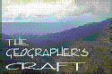

Collin County Aquifer Project
Top of Introduction
Top of Instructions
Creating a Basemap
Well Data Acquisition
Spreadsheet
Construction
Contour Mapping
of Aquifer Surface
Volume Calculation
Creating
a Legend
Optional:
Surface Plot
Optional:
Post Map
What to turn
in